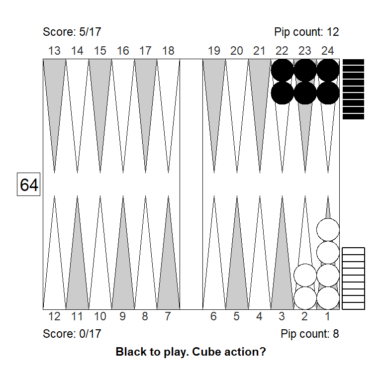
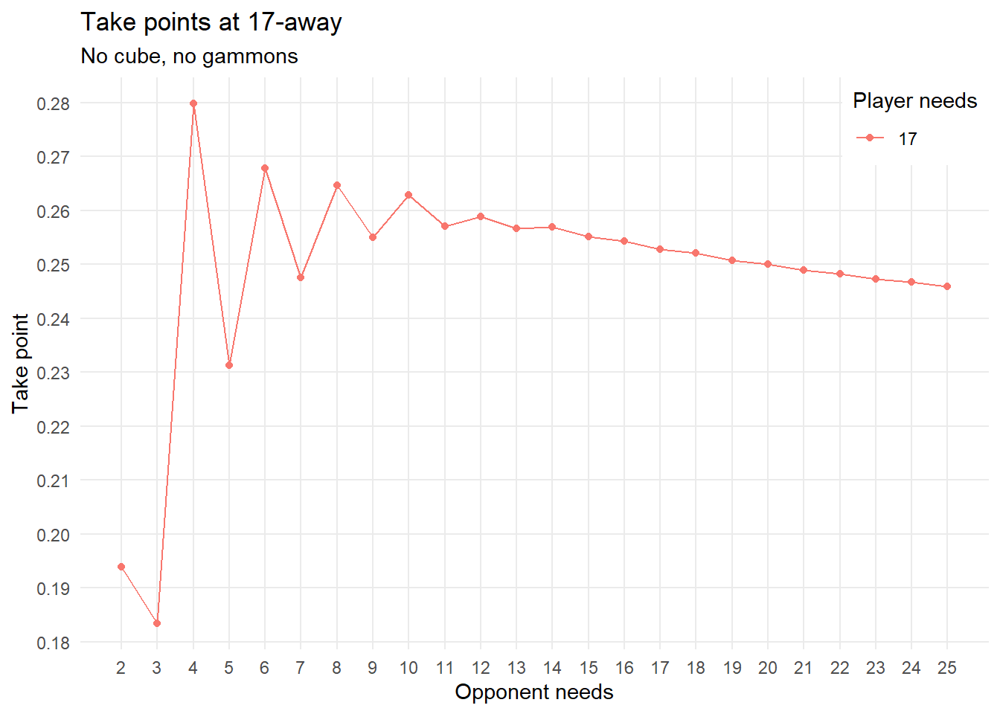
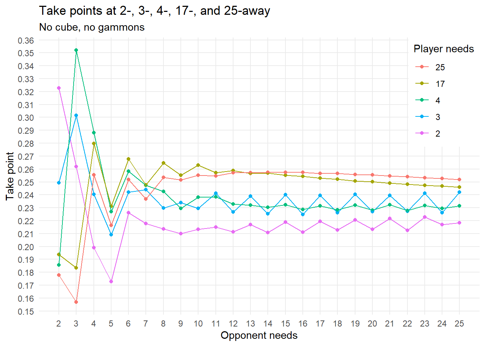
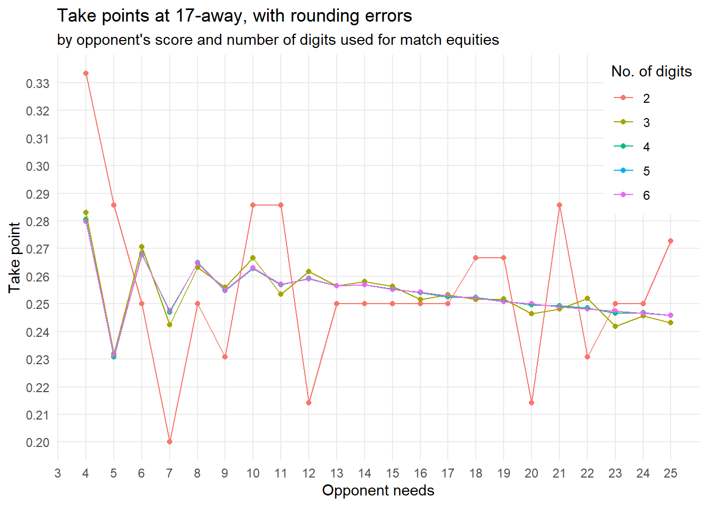
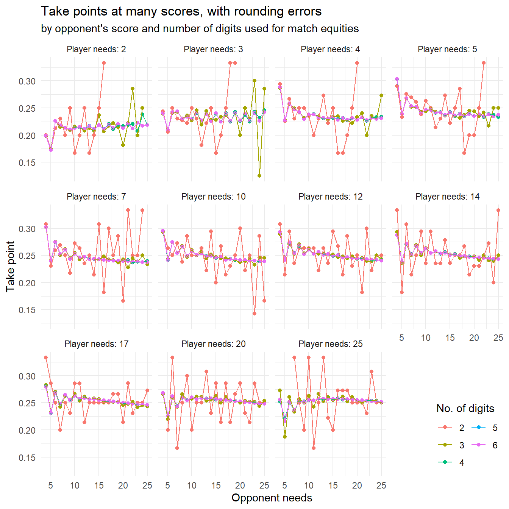
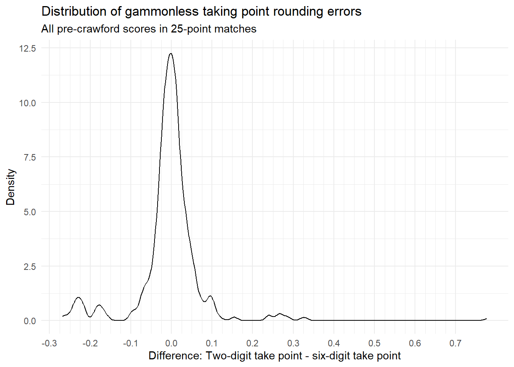
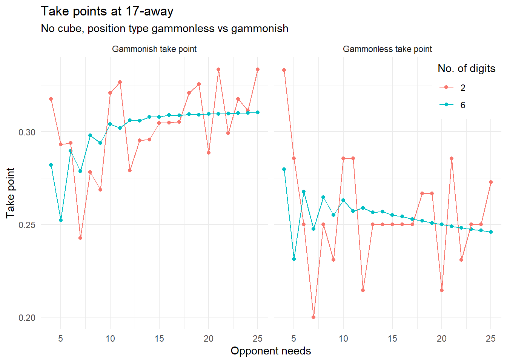
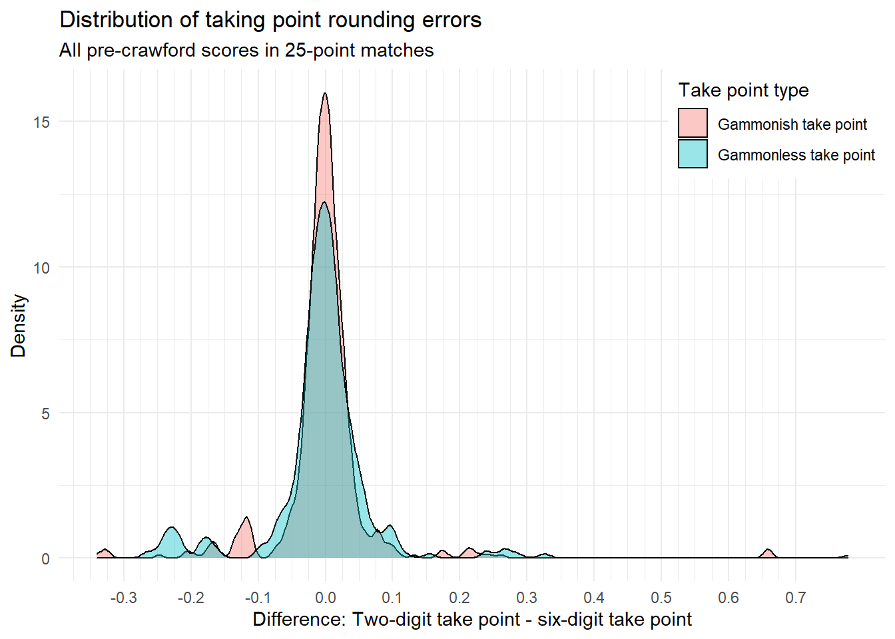

Match Equity Precision
Why this?
Match equity calculations in backgammon can be tricky and hard to perform over the table. How accurate can we hope to be when calculating take points that involve more than one entry in a match equity table?
Let’s do a couple of simple experiments and try to find out.
The rounding problem
Here’s one example that is fairly straight forward. You’re in the beginning of a 17-point match, off for a bad start, trailing 0-5 or 17-away, 12-away, or (-17,-12). You’re facing a double in a bearoff that you consider a borderline take/pass for money.
Perhaps something like this:
Should trailing as white make you more or less inclined to accept a double from black?
For simplicity let’s do the calculations assuming no redoubles, since this example is a bearoff with no recube potential anyway. Using the Kazaross XG2 match equity table, with full six digit precision, the calculation goes like this.
A pass means (-17,-11), \(mwc=0.2647\)
Taking and winning means (-15, -12), \(mwc=0.374741\), for a gain of: \(0.374741-0.2647 = 0.110041\)
Taking and losing means (-17,-10), \(mwc=0.22625\), for a loss of: \(0.2647 - 0.22625 = 0.03845\)
\(Take\ point = \frac{loss}{loss+gain} = \frac{0.03845}{0.03845 + 0.110041} = 0.2589383\)
Your take point is a bit higher than for money, you should be less inclined to take; so you probably have a pass if this is borderline for money.
But of course, nobody can do calculations like this with six digits over the board. If you’re a really good tournament player, you might attempt doing the same calculations rounded to two digits (whole percentages).
Let’s see how that would play out:
A pass means (-17,-11), \(mwc=0.26\)
Taking and winning means (-15, -12), \(mwc=0.37\), for a gain of: \(0.37-0.26 = 0.11\)
Taking and losing means (-17,-10), \(mwc=0.23\), for a loss of: \(0.26 - 0.23 = 0.03\)
\(Take\ point = \frac{loss}{loss+gain} = \frac{0.03}{0.03 + 0.11} = 0.2142857\)
Now, you reach the opposite conclusion: Your take point is considerably lower than the well-known \(0.25\) cubeless take point for money. You might well have a clear take.
Looking at the calculations, we see that they are impacted heavily by a couple of rounding errors: The equity from passing and getting to (-17, -11) gets rounded down; the equity from taking and winning gets rounded up so the total \(mwc\) loss from taking (and being wrong) is only about \(0.03\), almost a full percentage point lower that the \(0.038\) we get using all digits.
Finally, that lower number goes into both the numerator and the denominator, of the take point calculation, impacting the take point in a big way.
How common is this?
Did I cherry pick this example? Well, yes, but the cherry wasn’t hard to find. Let’s look at more examples.
Simple take points
For starters, here’s a plot showing more cubeless, gammonless take points, when the player being doubled is 17-away.

Some observations:
- Not surprisingly, you have a low take point, around \(0.19\), when the opponent needs just two points to win, and you have an automatic redouble available.
- Same thing when the opponent needs three points and you’re kind of desperate.
- You have a much higher take point when the opponent needs four, because the extra two point at stake are very valuable for the opponent.
- The same holds, but to a smaller and smaller degree, when the opponent needs 6, 8 or 10 points to win.
Let’s extend the plot to cover more scores:

Some observations:
In general, for this kind of doubles (initial, cubeless, gammonless) it is easier, not harder, to accept a double if you are leading.
The exception is if the opponent needs only two or three points while having a big lead. Here, you’re near dead if you lose anyway, so take points are low.
The very highest take point we find at (-4,-3): \(0.352\) At this score you’re often better off passing and getting to the notorious (-4,-2) where you can double very aggresively and try to win the match with a gammon.
With rounding errors
But the goal was to examine the impact of rounding errors. Let’s go back to the 17-away take points from the first diagram, and experiment with the number of digits we use for calculating take points.

We see that the 2-digit calculations are often off by a fair amount. The (-17,-12) example I mentioned earlier, is not the only one.
Let’s extend this again with many small plots for different scores:

From the chart it is pretty evident that two-digit precision just doesn’t cut it for calculating these kind of take points: They are all over the place, basically.
Across all scores, the average absolute difference between take points with two-digit precision and six-digit precision is: 0.041
The distribution of differences looks like this:

We see that is is very common for the two-digit take point to be off by a couple of percentage points; sometimes as much as five percentage points.
(In some extreme cases the difference between two-digit and six-digit take points can be as high as \(0.78\); this is because of scores like (-2,-23) where the leader’s rounded \(mwc\) is \(1.00\) even after passing; there’s no measurable gain from taking and winning, so the take point becomes \(1.00\)).
With gammons
Before we wrap up, let’s have a look at how take points with and without rounding error look when we also have gammons and backgammons. We use gammon and backgammon frequencies, that is, the proportion of games won or lost, that result in a gammon or backgammon. For illustration, we use frequencies similar to what can be expected at the beginning of a money game:
- Player’s gammon frequency: \(0.26\)
- Player’s backgammon frequency: \(0.012\)
- Opponent’s gammon frequency: \(0.26\)
- Opponent’s gammon frequency: \(0.012\)
A plot similar to the one earlier, this time comparing take points with and without gammons, 2- and 6-digit precision, when 17-away, vs. opponent score:

For gammonish positions the take points tend to increase with size of lead, but using only two digits basically create so much noise to that the calculations are meaningless.
Funny enough, it seems that the noise is actually sightly smaller when working with positions where gammons and backgammons are possible. This is probably because the most destructive rounding errors then to be cancel out when we have more numbers involved.
The density plot of take point rounding errors confirm this:

Conclusions
- It seems that doing take point calculations that involve several entries in the match equity table really requires at least three digit precision.
- Since this is not feasible to do over the board, the best practial approach is probably to study benchmark positions and to use heuristics along those lines:
- When one player need 2, 3, or 4 points to win, be aware that those remaining points are particular valuable.
- Automatic redoubles creating overage for one player and has a big impact on take decisions.
- When leading, be slightly more willing to take doubles in races where no gammons are possible.
- When leading, be slightly less willing to take doubles in games where gammons are a real possibility.